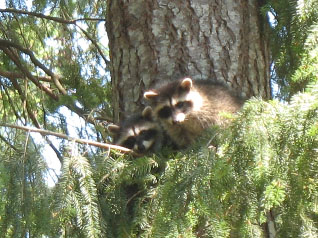

|
The other day a pair of young raccoons sat on one of our Douglas fir trees watching us play in the yard. To find out more about how to live with wildlife and about Raccoons you can visit the following websites:
Living with Wildlife: http://wdfw.wa.gov/wlm/living/index.htm and Raccoon Info: http://wdfw.wa.gov/wlm/living/raccoons.htm.  Sincerely, Kerstin Wiggins Herron Island Resident and Wildlife Observer for 20 years...and what lives in your back yard ? :-) |